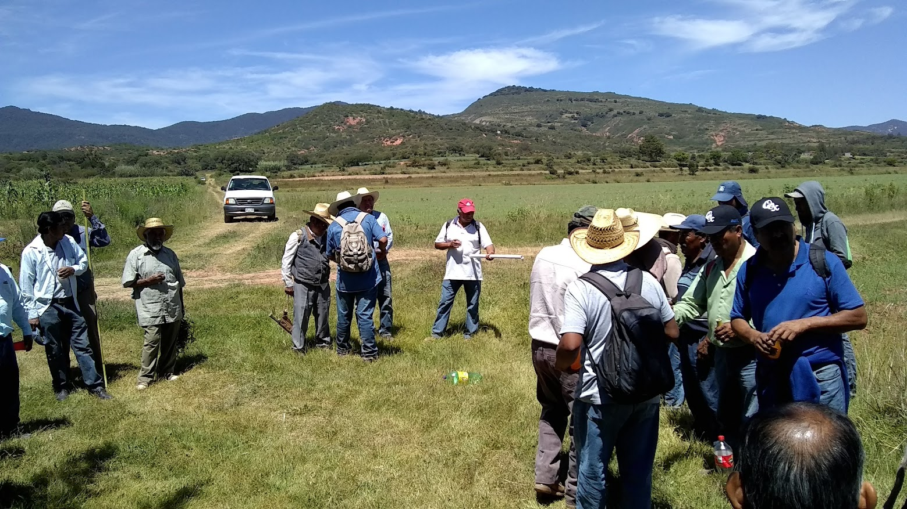
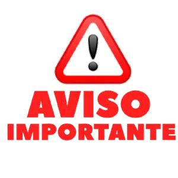
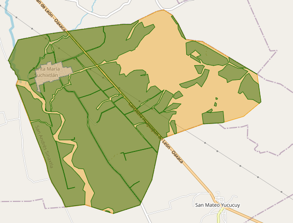

Servicios

Los servicios que puedes realizar en el comisariado son: Pago de tu parcela comunal. Deslindes de parcelas. Solicitud para ser avecindado. Solicitud para el mantenimiento de un camino cosechero.

Es el órgano encargado de la gestión administrativa y la ejecución de acuerdos de la asamblea en comunidades agrarias. así como la representación administrativa, junto con el comisariado existe el consejo de vigilancia que es el órgano encargado de vigilar que los actos del Comisariado se ajusten a los aspectos legales, lo dispuesto por el reglamento interno y a los acuerdos de la Asamblea; también revisa las cuentas y operaciones del Comisariado.
El comisariado de bienes comunales se conforma por un presidente, un secretario y un tesorero, los tres cargos suelen tener a un suplente. Tambien esta el consejo de vigilancia que se conforma por: un presidente y dos secretarios, al igual que el comisariado los cargos suelen tener un suplente. El comisariado tiene a su cargo tres diferentes tierras la cuales son: Tierras para el Asentamiento Humano; conforme al artículo 63 de la Ley Agraria, las tierras destinadas al asentamiento humano corresponden al área necesaria para el desarrollo de la vida comunitaria del núcleo agrario y están constituidas por los terrenos en que se ubique la zona de urbanización y su fundo legal. Tierras de Uso Común; según lo establecido en el artículo 73 de la Ley Agraria, constituyen el sustento económico de la vida en comunidad del núcleo agrario y están conformadas por aquellas tierras que no hubieren sido reservadas por la Asamblea para el asentamiento del núcleo de población, ni sean tierras parceladas. Tierras Parceladas; de conformidad con los artículos 76 y 78 de la Ley Agraria son los terrenos que han sido fraccionados y repartidos entre sus miembros y que se pueden explotar en forma individual, en grupo o colectivamente. Corresponde a los ejidatarios o comuneros el derecho de aprovechamiento, uso y usufructo de ellos.
Los servicios que puedes realizar en el comisariado son: Pago de tu parcela comunal. Deslindes de parcelas. Solicitud para ser avecindado. Solicitud para el mantenimiento de un camino cosechero.
En el apartado siguiente podras obtener informacion sobre reuniones o diversas actividades que realizara el comisariado de biene comunales


El siguiente mapa muestra todas las parcelas del nucleo agrario de Santa Maria Suchixtlán; Aqui podras ubicar la tuya.